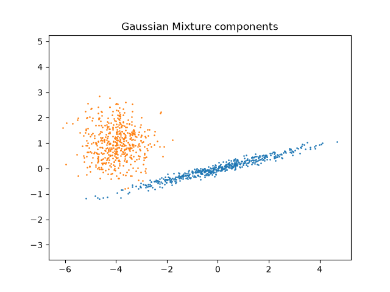
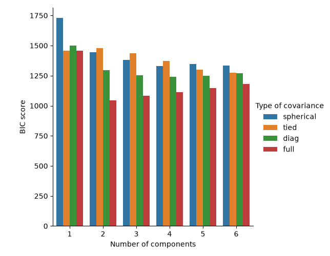
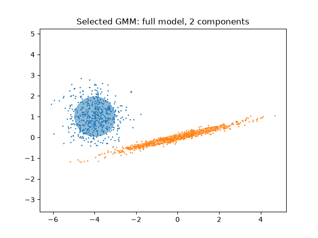
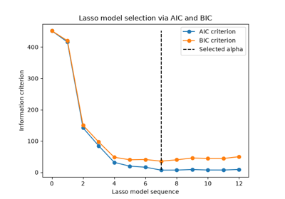
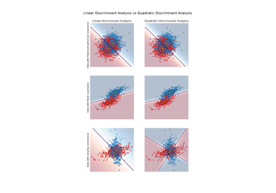

Note
Go to the end to download the full example code or to run this example in your browser via JupyterLite or Binder.
Gaussian Mixture Model Selection#
This example shows that model selection can be performed with Gaussian Mixture Models (GMM) using information-theory criteria. Model selection concerns both the covariance type and the number of components in the model.
In this case, both the Akaike Information Criterion (AIC) and the Bayes Information Criterion (BIC) provide the right result, but we only demo the latter as BIC is better suited to identify the true model among a set of candidates. Unlike Bayesian procedures, such inferences are prior-free.
# Authors: The scikit-learn developers
# SPDX-License-Identifier: BSD-3-Clause
Data generation#
We generate two components (each one containing n_samples) by randomly
sampling the standard normal distribution as returned by numpy.random.randn.
One component is kept spherical yet shifted and re-scaled. The other one is
deformed to have a more general covariance matrix.
import numpy as np
n_samples = 500
np.random.seed(0)
C = np.array([[0.0, -0.1], [1.7, 0.4]])
component_1 = np.dot(np.random.randn(n_samples, 2), C) # general
component_2 = 0.7 * np.random.randn(n_samples, 2) + np.array([-4, 1]) # spherical
X = np.concatenate([component_1, component_2])
We can visualize the different components:
import matplotlib.pyplot as plt
plt.scatter(component_1[:, 0], component_1[:, 1], s=0.8)
plt.scatter(component_2[:, 0], component_2[:, 1], s=0.8)
plt.title("Gaussian Mixture components")
plt.axis("equal")
plt.show()

Model training and selection#
We vary the number of components from 1 to 6 and the type of covariance parameters to use:
"full": each component has its own general covariance matrix."tied": all components share the same general covariance matrix."diag": each component has its own diagonal covariance matrix."spherical": each component has its own single variance.
We score the different models and keep the best model (the lowest BIC). This
is done by using GridSearchCV and a
user-defined score function which returns the negative BIC score, as
GridSearchCV is designed to maximize a
score (maximizing the negative BIC is equivalent to minimizing the BIC).
The best set of parameters and estimator are stored in best_parameters_ and
best_estimator_, respectively.
from sklearn.mixture import GaussianMixture
from sklearn.model_selection import GridSearchCV
def gmm_bic_score(estimator, X):
"""Callable to pass to GridSearchCV that will use the BIC score."""
# Make it negative since GridSearchCV expects a score to maximize
return -estimator.bic(X)
param_grid = {
"n_components": range(1, 7),
"covariance_type": ["spherical", "tied", "diag", "full"],
}
grid_search = GridSearchCV(
GaussianMixture(), param_grid=param_grid, scoring=gmm_bic_score
)
grid_search.fit(X)
Plot the BIC scores#
To ease the plotting we can create a pandas.DataFrame from the results of
the cross-validation done by the grid search. We re-inverse the sign of the
BIC score to show the effect of minimizing it.
import pandas as pd
df = pd.DataFrame(grid_search.cv_results_)[
["param_n_components", "param_covariance_type", "mean_test_score"]
]
df["mean_test_score"] = -df["mean_test_score"]
df = df.rename(
columns={
"param_n_components": "Number of components",
"param_covariance_type": "Type of covariance",
"mean_test_score": "BIC score",
}
)
df.sort_values(by="BIC score").head()
import seaborn as sns
sns.catplot(
data=df,
kind="bar",
x="Number of components",
y="BIC score",
hue="Type of covariance",
)
plt.show()

In the present case, the model with 2 components and full covariance (which corresponds to the true generative model) has the lowest BIC score and is therefore selected by the grid search.
Plot the best model#
We plot an ellipse to show each Gaussian component of the selected model. For
such purpose, one needs to find the eigenvalues of the covariance matrices as
returned by the covariances_ attribute. The shape of such matrices depends
on the covariance_type:
"full": (n_components,n_features,n_features)"tied": (n_features,n_features)"diag": (n_components,n_features)"spherical": (n_components,)
from matplotlib.patches import Ellipse
from scipy import linalg
color_iter = sns.color_palette("tab10", 2)[::-1]
Y_ = grid_search.predict(X)
fig, ax = plt.subplots()
for i, (mean, cov, color) in enumerate(
zip(
grid_search.best_estimator_.means_,
grid_search.best_estimator_.covariances_,
color_iter,
)
):
v, w = linalg.eigh(cov)
if not np.any(Y_ == i):
continue
plt.scatter(X[Y_ == i, 0], X[Y_ == i, 1], 0.8, color=color)
angle = np.arctan2(w[0][1], w[0][0])
angle = 180.0 * angle / np.pi # convert to degrees
v = 2.0 * np.sqrt(2.0) * np.sqrt(v)
ellipse = Ellipse(mean, v[0], v[1], angle=180.0 + angle, color=color)
ellipse.set_clip_box(fig.bbox)
ellipse.set_alpha(0.5)
ax.add_artist(ellipse)
plt.title(
f"Selected GMM: {grid_search.best_params_['covariance_type']} model, "
f"{grid_search.best_params_['n_components']} components"
)
plt.axis("equal")
plt.show()

Total running time of the script: (0 minutes 1.785 seconds)
Related examples

Lasso model selection via information criteria

Linear and Quadratic Discriminant Analysis with covariance ellipsoid